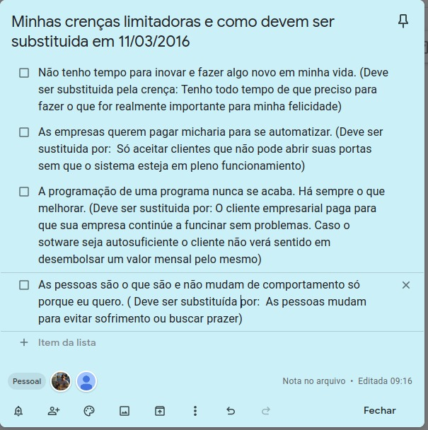

Olhando esse texto que escrevi em 2016, percebo que a mudança não é fácil, é por isso que as pessoas tem dificuldade para largarem seus vícios.
Mesmo sabendo o que precisa ser feito, a pessoa continua a fazer o que sempre fez.
Mais deixei de fumar um dia, e poderei fazer diferente hoje. Basta que eu faça o que fiz para abandonar o vício do cigarro.
Vou refletir sobre esse assunto.
Paulo Pacheco, 02/12/2020